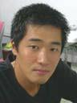
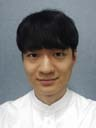

Alumni members of the Entertainment Computing Laboratory
|
Bum-Jong Lee
일반대학원 컴퓨터공학과 석사졸업 Degree: Master of Engineering (M.E.) Graduate: Feb. 2008. |
|  |
Jong-Hyun Yoon
일반대학원 컴퓨터공학과 석사졸업 Degree: Master of Engineering (M.E.) Graduate: Feb. 2008. |
|
Young-Jun Jeon
일반대학원 컴퓨터공학과 박사졸업 Degree: Doctor of Philosophy (Ph.D.) Graduate: Feb. 2010. |
|
Ho-Young Ahn
일반대학원 컴퓨터공학과 석사졸업 Degree: Master of Engineering (M.E.) Graduate: Feb. 2012. |
|
Byeong-Jo Bae
일반대학원 컴퓨터공학과 석사졸업 Degree: Master of Engineering (M.E.) Graduate: Feb. 2012. |
|
Yong-Ho Kim
일반대학원 컴퓨터공학과 석사졸업 Degree: Master of Engineering (M.E.) Graduate: Feb. 2014. |
|
Hyun-Cheol Yoon
일반대학원 컴퓨터공학과 석사졸업 Degree: Master of Engineering (M.E.) Graduate: Sep. 2015. |
|
So-Hee Park
일반대학원 컴퓨터공학과 석사과정 Degree: Master of Engineering (M.E.) Graduate: Leave of absence since Feb. 2016. |
|
Bo-Sung Kim
일반대학원 컴퓨터공학과 석사졸업 Degree: Master of Engineering (M.E.) Graduate: Feb. 2016. |
|
June-Seong Jo
정보기술대학 컴퓨터공학부 학사졸업 Degree: Bachelor of Science in Engineering (BSE) Graduate: Feb. 2009. |
|
Ji-Hoon Choi
정보기술대학 컴퓨터공학부 학사졸업 Degree: Bachelor of Science in Engineering (BSE) Graduate: Feb. 2010. |
|
Dong-Hee Kim
정보기술대학 컴퓨터공학부 학사졸업 Degree: Bachelor of Science in Engineering (BSE) Graduate: Feb. 2010. |
|
Gwang-hyo Son
정보기술대학 컴퓨터공학부 학사졸업 Degree: Bachelor of Science in Engineering (BSE) Graduate: Feb. 2018. |
|
Dong-ryong Kim
정보기술대학 컴퓨터공학부 학사졸업 Degree: Bachelor of Science in Engineering (BSE) Graduate: Feb. 2018. |
|
Jeong-Hyeon Park
정보기술대학 컴퓨터공학부 학사졸업 Degree: Bachelor of Science in Engineering (BSE) Graduate: Sep. 2018. |
|
Jong-Yoon Kim
정보기술대학 컴퓨터공학부 학사졸업 Degree: Bachelor of Science in Engineering (BSE) Graduate: Sep. 2018. |
|  |
Min-Seok Jeong
정보기술대학 컴퓨터공학부 학사과정 Degree: Bachelor of Science in Engineering (BSE) Graduate: Feb. 2019. |
Entertainment Computing Laboratory